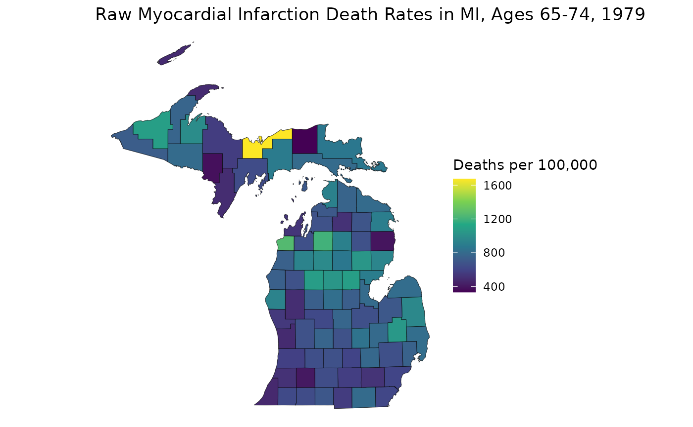
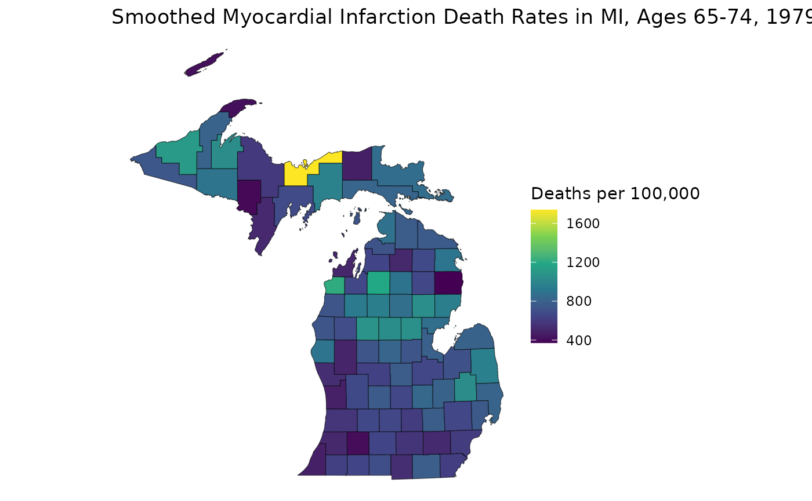

An Introduction to the RSTr Package
RSTr.RmdOverview
The RSTr package is a tool that provides a host of
Bayesian spatiotemporal models in conjunction with C++ to quickly and
easily generate spatially smoothed estimates for your spatial data. This
document introduces you to the basics of the RSTr package
and shows you how to apply the basic functions to the included example
data to get small area estimates.
Models
The models provided in the RSTr package are based on the
Besag,
York, and Mollié (1991) Conditional Autoregressive (CAR) model
(heretofore referred to as the “Univariate CAR” or “UCAR” model), which
spatially smooths data by incorporating information such as event and
population counts from neighboring geographic units (counties, census
tracts, etc.). The degree of spatial smoothing is determined by a
spatial region’s respective population size. The CAR model can be
extended to several levels of complexity, depending on the input
data:
Univariate CAR (UCAR): Spatially smooths across geographies;
Multivariate CAR (MCAR): Spatially smooths across geographies and sociodemographic groups; and
Multivariate Spatiotemporal CAR (MSTCAR): Spatially smooths across geographies, sociodemographic groups, and time periods.
For this vignette, we will demonstrate RSTr’s
functionality with an MSTCAR model.
Restricted-informativeness models
A problem with CAR models pointed out by Quick, et
al. (2021) is that of over-smoothing due to the informativeness of
the BYM model. The RSTr package provides parameters to
restrict informativeness in UCAR models for both Poisson- and
binomial-distributed data. Informativeness restrictions for the MCAR and
MSTCAR models are under progress, and will be incorporated into the
RSTr package as they are developed.
Datasets
RSTr comes with three main datasets:
miheart, miadj, and mishp.
miheart and miadj are related to the necessary
components of our models, and mishp is a shapefile that
helps map your results. To run an MSTCAR model, two components are
necessary:
Event counts for a parameter of interest, stratified by region, group, and time period, and its corresponding population counts. These data may be binomial- or Poisson-distributed. The example dataset is binomial-distributed myocardial infarction deaths in six age groups from 1979-1988 in Michigan. Reference
miheartto see how this data looks or?miheartfor more information on the dataset. For more information on preparing your event data, readvignette("RSTr-event").An adjacency structure for your data. This is a dataset that tells
RSTrwhich regions are neighbors with each other.RSTrwill accept alistof vectors whose indices represent the neighbors of each region. Referencemiadjfor an example adjacency structure list. For more information on preparing your adjacency data, readvignette("RSTr-adj").
Some quick notes about data setup:
Event/population data must be organized in a very specific manner.
RSTr’s MSTCAR model can only accept 3-dimensional arrays: spatial regions must be on the rows, socio/demographic groups must be on the columns, and time periods must be on the matrix slices. Moreover, your event data’s regions should be listed in the same order in your adjacency structure data.Every region must have at least one neighbor. Moreover, the adjacency structures must be listed in the same order as your count data.
Functions
RSTr comes with a set of functions to generate small
area estimates from your dataset. Here is a brief overview of the basic
functions and their purpose:
-
initialize_*(): Inputs data and model specifics and creates a local folder with all associated files to prepare for sample generation; -
run_sampler(): The Gibbs sampler function which generates samples and saves them to a local folder; -
load_samples(): Imports samples generated withrun_sampler()into your R session; and -
get_medians(): Calculates median estimates loaded in byload_samples().
Example Model
initialize_mstcar()
With an understanding of the example datasets and the functions, we can start running our first model. The example datasets are set up for us to run out-of-the-box:
library(RSTr)
initialize_mstcar(
name = "my_test_model",
data = miheart,
adjacency = miadj,
dir = tempdir()
)
#> Checking data...#> Checking spatial data...
#> Checking inits...
#> The following objects were created using defaults in 'inits': beta theta Z G rho tau2 Ag
#> Checking priors...
#> The following objects were created using defaults in 'priors': theta_sd tau_a tau_b Ag_scale Ag_df G_df rho_a rho_b rho_sd
#> Model ready!Here, we use the initialize_mstcar() function to specify
our model. initialize_mstcar() accepts a few different
arguments in this case:
- The
nameargument specifies the folder where the model data lives; - The
dataargument specifies event/population data; - The
adjacencyargument specifies our adjacency structure; and - The
dirargument specifies the directory where to save the folder.
initialize_mstcar() creates a folder named
my_test_model in R’s temporary directory containing folders
that will hold batches of outputs for each parameter update, along with
a set of .Rds files associated with model configuration.
Nothing here is saved in the R environment because MSTCAR models can
quickly become so large that it’s impossible to hold the entire sample
in RAM. Therefore, all of the data related to running the model is saved
locally. Should you want to save your model somewhere besides the
temporary directory for future use, you can specify a folder with the
dir argument.
Note that initialize_mstcar() accepts more arguments
than are used here, but these are the only ones that are needed to get
started. Also note that when we run the model, we get a couple of
messages telling us certain priors and initial values were automatically
generated. Priors and initial values can be specified manually, but this
is outside the scope of this vignette. There will also be checks
performed on the input data: if something is wrong, the warnings and
error messages will tell you what is wrong and how to fix it. For a list
of diagnostic errors and what they mean, read
vignette("RSTr-troubleshooting").
Finally, you may notice a plot was generated during model setup. This is one last double-check for the MSTCAR model to make sure the data are set up correctly before running the model, showing the total event and population count for each year of data. If the number of datapoints does not match up to the number of years in your dataset or if the changes in values over time don’t entirely make sense, you may need to double-check your data input.
If you want to learn more about initialize_mstcar() and
the other initialization functions, read
vignette("RSTr-init").
run_sampler()
Once we have our model object set up, we can start getting samples.
This is the heart of the RSTr package and what allows us to
gather our final rate estimates. To get your samples, simply specify the
name of the model and the directory:
run_sampler(name = "my_test_model")
#> Starting sampler on Batch 1 at Tue Nov 18 19:39:54#> Model finished at Tue Nov 18 19:40:19run_sampler() takes information saved in
my_test_model and uses it to run the RSTr
Gibbs sampler. The RSTr package works by generating samples
in batches, then saving these batches locally inside of
my_test_model to be retrieved once the model is finished
running. Generating samples in batches helps facilitate the tuning of
the underlying MCMC algorithm and helps avoid computational burden by
only holding a fraction of the total samples in memory at any given
time. RSTr runs 6,000 iterations split into 60 batches of
size 100 each. All batches are thinned for every 10 iterations by
default, as the thetas tend to exhibit autocorrelation.
Moreover, thinning saves space when writing samples to the hard drive,
as batches from larger models can balloon to gigabytes of size before
thinning. Console outputs will show when the last batch was saved and
the current iteration count of the model. The run_sampler()
function also updates the .Rds files containing different
information regarding the model in case you need to reload your model at
a later date. If the model crashes for any reason or R closes while the
model is being run, the metadata Rds files will keep track
of the current batch and pick back up where it left off when re-run.
If you want to learn more about the run_sampler()
function, read vignette("RSTr-samples").
load_samples()
After run_sampler() is done running (i.e., generates
6000 iterations) and your samples have been saved to
mod_test, you can bring the samples into R using the
load_samples() function. We can pull in samples from any of
our available parameters, but let’s pull in the outputs for
theta, our rate estimates:
samples <- load_samples(name = "my_test_model", param = "theta", burn = 2000)Here, the load_samples() function brings in samples from
the model my_test_model in R’s temporary directory, only
loading in iterations after burn. The burn
argument works to ensure that the estimates we get are sound by
specifying a period where the model has a bit of time to stabilize
before gathering samples. In total, we have pulled in
(6000 - 2000) / 10 = 400 samples, as the sampler only saves
every 10 iterations. To learn more about post-Gibbs sampler diagnostics
or about load_samples(), read
vignette("RSTr-samples").
get_medians()
With our output loaded into R, we can finally get our estimates by
putting our samples object into the
get_medians() function:
medians <- get_medians(samples)This creates an array object with median estimates for
theta along each year, county, and region:
head(medians)For this type of mortality data, it is common to observe the rates per 100,000 population. Therefore, in this case we multiply the rates by 100,000 prior to interpretation:
# the first 5 counties for the first 3 years
head(medians) * 1e5You can also inspect rates by age group, year, or region:
medians["26005", "65-74", ] * 1e5 # explore between time periods
medians[, "65-74", "1979"] * 1e5 # explore between counties
medians["26005", , "1979"] * 1e5 # explore between age groupsFor more information about the median estimates, read
vignette("RSTr-medians").
Illustrative Example: Mapping Estimates
With our estimates finally in a form we can use, we can get a better
picture of geographic patterns with a map, which can easily be made
using ggplot (or your favorite mapping package). Let’s see
how the estimates were smoothed:
library(ggplot2)
# Original Myocardial Infarction Death Rates in MI, Ages 55-64, 1979
raw_65_74 <- (miheart$Y / miheart$n * 1e5)[, "65-74", "1979"]
ggplot(mishp) +
geom_sf(aes(fill = raw_65_74)) +
labs(
title = "Raw Myocardial Infarction Death Rates in MI, Ages 65-74, 1979",
fill = "Deaths per 100,000"
) +
scale_fill_viridis_c() +
theme_void()
# Spatially Smoothed MI Death Rates in MI
est_65_74 <- medians[, "65-74", "1979"] * 1e5
ggplot(mishp) +
geom_sf(aes(fill = est_65_74)) +
labs(
title = "Smoothed Myocardial Infarction Death Rates in MI, Ages 65-74, 1979",
fill = "Deaths per 100,000"
) +
scale_fill_viridis_c() +
theme_void()
This map helps us see how RSTr smooths rates. First,
notice how the range of the two plots are different: the smoothed map
has a smaller range because RSTr stabilizes high and low
extreme values which are usually caused by low population counts. Also,
notice how the transitions between high-rate and low-rate regions are
more gradual on the smoothed map. This is a consequence of using
neighboring regions to inform and stabilize estimates.
From here, we can get a better idea of how these maps contrast. For
example, on the first map, the largest region of interest is the middle
portion of the Lower Peninsula (LP), but on the smoothed map, much of
this area has attenuated rates. On the flip side, many areas in the
Upper Peninsula (UP) have low rates on the first map, but we can see on
the smoothed map that the places with higher rates on the UP actually go
further eastward and the higher-rate areas on the LP are focused around
counties on the Saginaw Bay, indicating that these areas may require
more attention than previously thought. These are the kinds of
inferences that can be made using estimates generated by the
RSTr package and the main motivation for running this
spatiotemporal model.
Closing Thoughts
This vignette introduces you to inputting data into the
initialize_mstcar() function, getting samples with the
run_sampler() function, loading those samples into R with
the load_samples() function, and finally making a map with
estimates gathered from the get_medians() function. What
we’ve discussed here is just scratching the surface of the
RSTr package. Other package vignettes will dive deeper into
the intricacies of each component of the package, into the construction
of the model itself, and into investigating the reliability of
estimates. All of these things together will ensure you get the most out
of using the RSTr package.